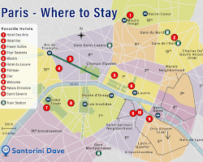

There are many travel agencies that offer tours of Paris. Some agencies specialize in group tours, while others offer private tours. There are also agencies that offer customized tours that can be tailored to your specific interests.
When choosing a travel agency for your Paris tour, there are a few things you should keep in mind. First, you should make sure that the agency has a good reputation. You can read online reviews or ask your friends or family for recommendations.
Second, you should consider the type of tour you want. If you are traveling with a group, you will need to choose an agency that offers group tours. If you are traveling with your family or friends, you may want to consider a private tour.
Finally, you should consider your budget. Paris tours can range in price from a few hundred dollars to several thousand dollars. You should choose an agency that offers tours that fit your budget.
Here are some travel agencies that offer tours of Paris:
-
Paris Connection: This agency offers a variety of tours of Paris, including group tours, private tours, and customized tours.
 -
Parigi Travel Tour: This agency offers group tours of Paris that are led by experienced guides.

Once you have chosen a travel agency, you can start planning your tour. The agency will help you book your flights and accommodations, and they will also provide you with information about the tours they offer. A Paris tour can be a great way to see all of the city's highlights. With the help of a travel agency, you can be sure to have a memorable and enjoyable experience.
Here are some additional tips for planning a Paris tour:
- Book your tour in advance, especially if you are traveling during peak season.
- Consider the length of your tour. If you are short on time, you may want to choose a shorter tour that focuses on the city's most popular attractions.
- If you are interested in learning more about French history or culture, you may want to choose a tour that includes visits to museums or historical sites.
- Don't forget to pack comfortable shoes! You will be doing a lot of walking on your tour.
- I hope this article helps you plan your Paris tour. Paris is a wonderful city, and I am sure you will have a great time exploring it.